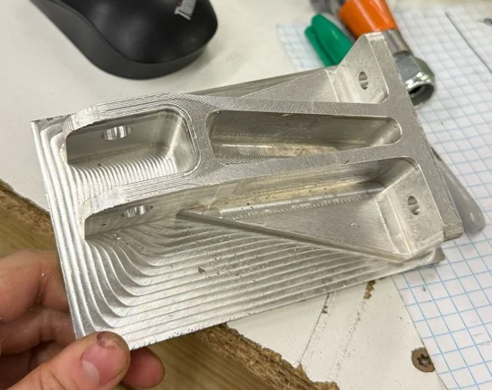
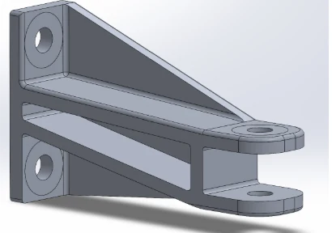
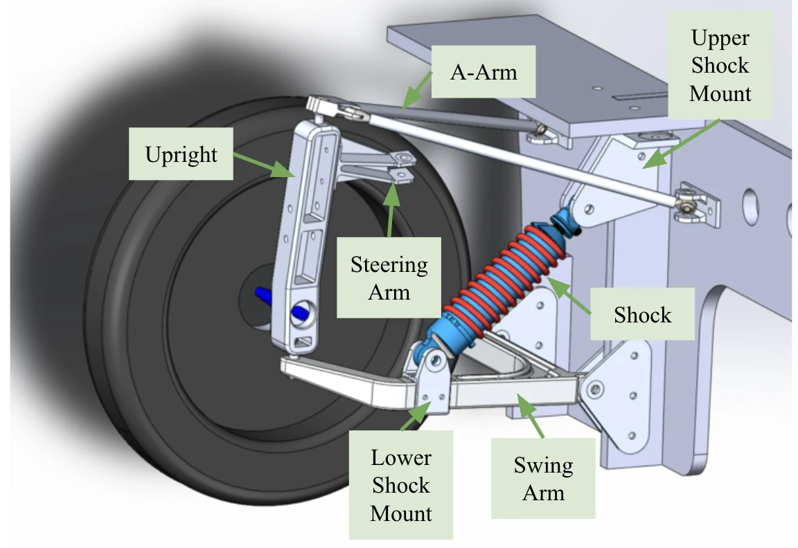
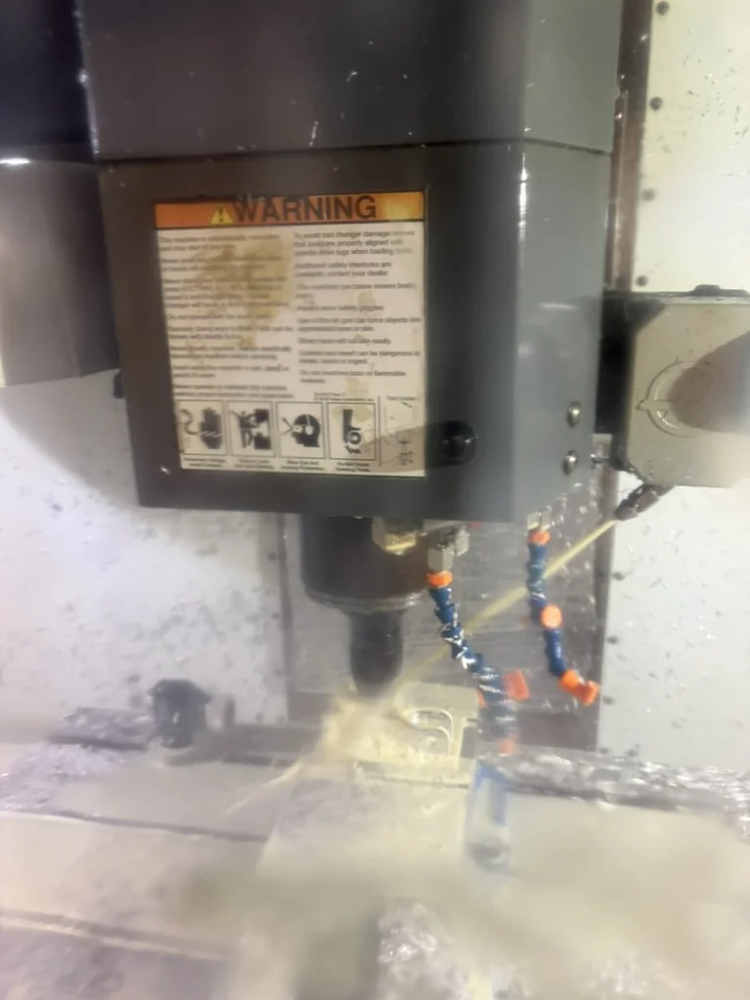
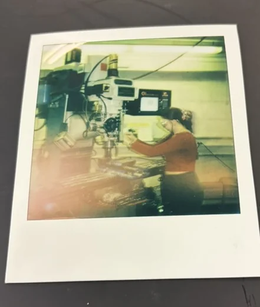
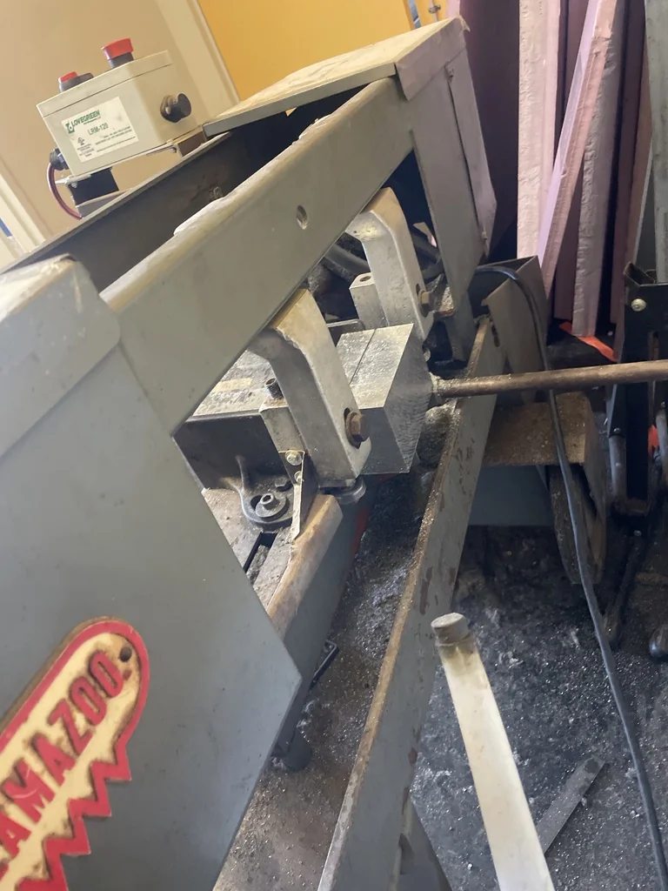

Front suspension steering arm
Machining a suspension steering arm from solid aluminum stock while learning the full workflow from setup planning to CNC toolpaths.

Completed 7075 aluminum front-suspension steering arm showing machined pockets and mounting features · Click image to enlarge
The part
The steering arm is part of the front-suspension and steering assembly of the MIT solar car. I manufactured the component from a solid block of 7075 aluminum, using our CAD geometry to plan the necessary mounting holes, profile, and internal pockets.
My role
This was my first project creating a CAM toolpath. I had to learn which operations were appropriate for each feature and how to sequence them while keeping the material securely held. That made the process more than simply operating a CNC machine: I had to work through setup orientation, cutting tools, material removal, and the order of operations.
Manufacturing sequence
I first prepared the stock using a cold saw, then used a manual mill to drill the mounting and rod-end holes. For the Haas CNC operations, I planned facing, pocketing, and profile cuts in Autodesk Fusion, including a shallow facing pass and smaller end-mill cuts for the internal features. I removed the remaining gripping stock after the main cuts.
Takeaway
The finished component was a satisfying result, but the biggest learning experience was working out the manufacturing strategy from scratch. I now have a much better understanding of how a CAD part becomes a machinable set of operations and what details matter at the machine.
Project imagery




